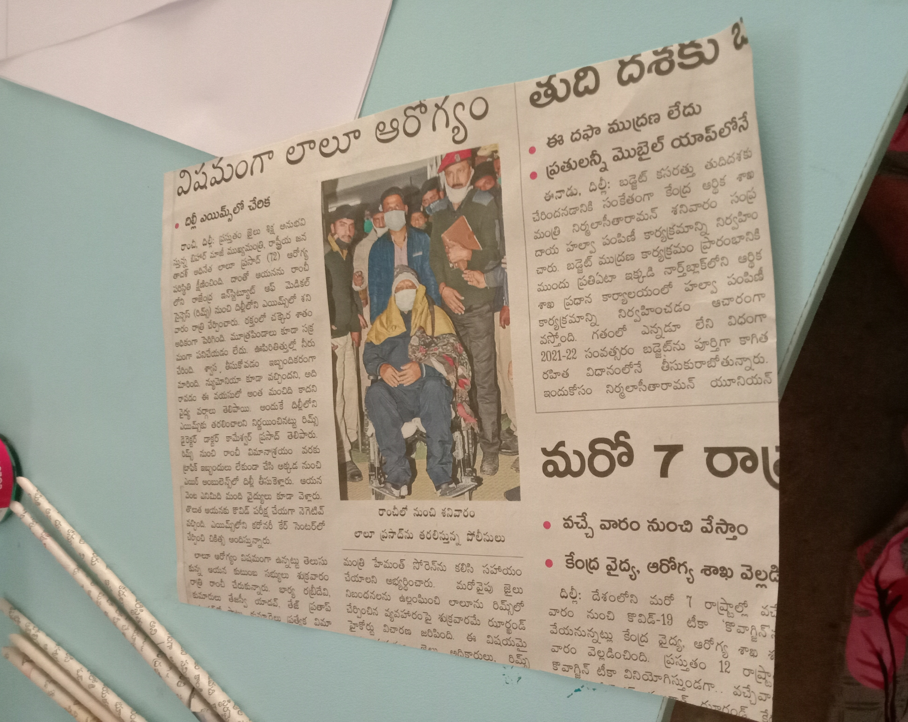
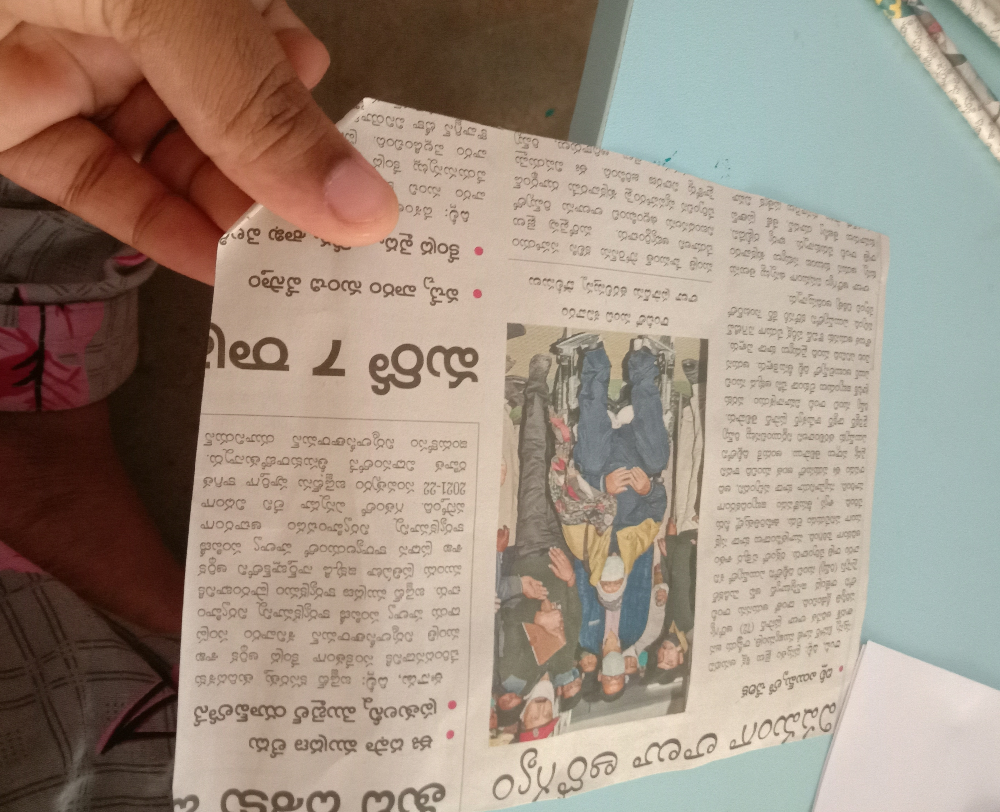
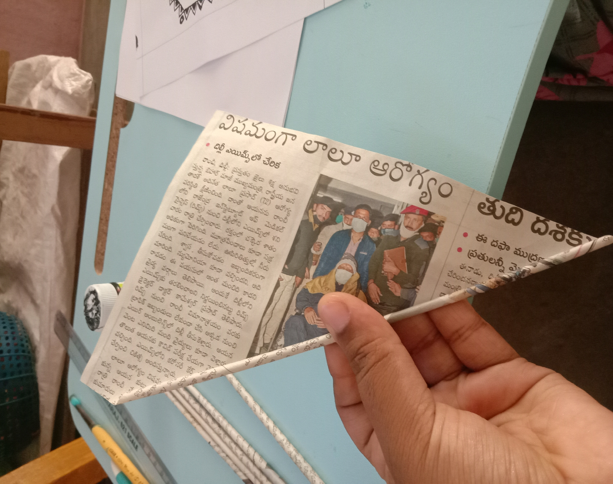
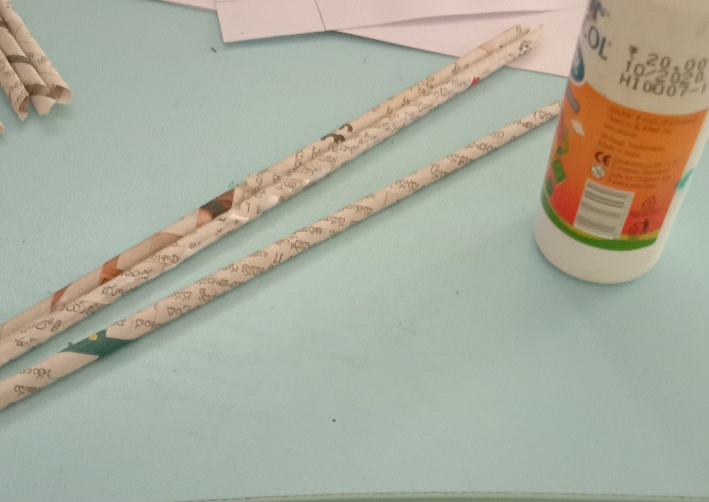
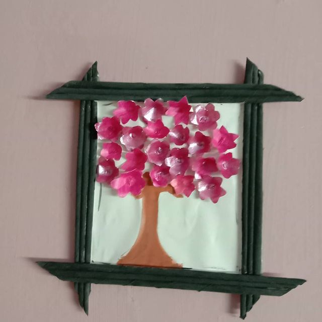

Things we need
- Old newspapers - You can buy here
- Fevicol - You can buy here
- Scissors - You can buy here
- fevicryl Paints - You can buy here
- Camlin color tubes - You can buy here
- Paint Brushes - You can buy here
Every individual has a unique way of relaxation. Relaxation with some effort can lead to designing your own fantasy world. In this post you are going to learn about how to design simple photo frames with old newspapers.
Connect me in myCraft.blog for Awesome craft ideas.
Steps to design a photo frame
Step1 :
Take a bunch of old newspapers or any other papers from your old notebooks and cut them into small pieces.
Step2 :
Try to roll the paper like this,
Step3 :
At the end apply some fevicol, and stick it.
Step4 :
Then do the same and prepare a bunch of newspaper sticks
Step5 :
Color the sticks with your favorite color
Step6 :
Stick them in different shapes and give some gap on top of the photo frame to fix your photo.
